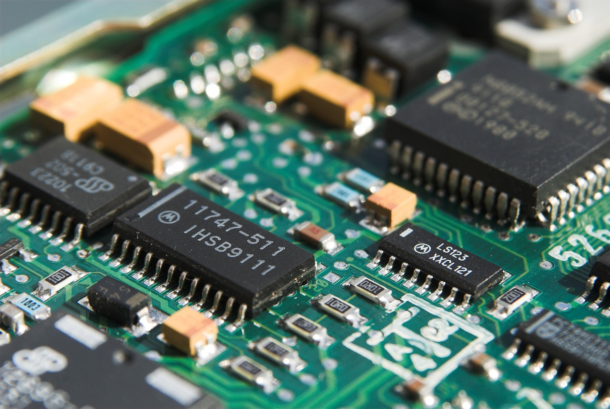

Hardware del computador

Conocido también como el "Soporte físico", del computador, está constituido por el conjunto de circuitos
electrónicos y componentes electromecánicos de una
PC.
HARD WARE:
Material “duro”,
Componente tangible de la PC.
Alunos ejemplos de hardware son: El teclado, el monitor, tarjetas Chips, etc.
Conceptos de hardware
El hardware es el componente físico y tangible de una computadora. Existen cinco
elementos principales en todo sistema de cómputo: Dispositivos de entrada, Unidad de proceso (Procesador (UCP), memoria principal), Dispositivos de salida y Almacenamiento secundario.
Procesador o UCP: Físicamente son pequeños chips llamados microprocesadores. Es el “Cerebro” de la computadora, también es el lugar donde se manipulan los datos, donde se interpretan y ejecutan las
instrucciones. Está compuesto por dos elementos: La Unidad de Control (UC) y la Unidad Aritméticologica (UAL).
UNIDAD CENTRAL - UC: Administra los recursos del computador, es decir, la
memoria, los dispositivos de entrada, los de salida y los de almacenamiento. Selecciona e interpreta las instrucciones del programa cargado y se encarga de
que sean ejecutadas. Transfiere los datos a la Unidad Aritmética-Lógica, para su procesamiento.
UNIDAD ARITMETICOLOGICA – UAL: Ejecuta operaciones aritméticas y comparaciones:
Cálculos: suma, resta, multiplicación y división.
Comparaciones: Operadores aritméticos: <, <=, =>, >
Operadores booleanos: OR, AND, NOT
LA PLACA MADRE (MOTHER BOARD): Es la placa principal de circuitos en la computadora. Sostiene el procesador y la memoria,
proporciona los slots de expansión para los periféricos, y ya sea directa o indirectamente,
conecta todas las partes de la computadora.
El principal propósito de la Tarjeta Madre es proporcionar las conexiones eléctricas y
lógicas para que los otros componentes del sistema se comuniquen.
SISTEMA DE BUSES DE UNA COMPUTADORA: Los diferentes elementos que componen una computadora se tienen que comunicar de
alguna manera, y esta comunicación se realiza por los llamados buses. Los buses son un
conjunto de hilos o conexiones que llevan información de todo tipo de un elemento a otro,
transportando la información en paralelo, (esto quiere decir, que los datos van por todos
los hilos del bus simultáneamente).
MEMORIA PRINCIPAL: Físicamente, son pequeños chips conectados a la tarjeta principal de la computadora.
Almacena información vital para la operación de la computadora y para el procesamiento
de los datos.
Clasificación:
R O M
R A M
PERIFÈRICOS: Se entiende por periférico a las unidades o dispositivos que permiten a la computadora
comunicarse con el exterior, esto es, tanto ingresar como exteriorizar información y datos.
Los periféricos son los que permiten realizar las operaciones conocidas como de
entrada/salida (E/S).
PERIFÉRICOS DE ENTRADA (E): De esta categoría son aquellos que permiten el ingreso de información, en general desde
alguna fuente externa o por parte del usuario. Los dispositivos de entrada proveen el
medio fundamental para transferir hacia la computadora (más propiamente al procesador)
información desde alguna fuente, sea local o remota. También permiten cumplir la
esencial tarea de leer y cargar en memoria el sistema operativo y las aplicaciones o
programas informáticos, los que a su vez ponen operativa la computadora y hacen posible
realizar las más diversas tareas.
PERIFÉRICOS DE SALIDA (S): Son aquellos que permiten emitir o dar salida a la información resultante de las
operaciones realizadas por la CPU (procesamiento).
Los dispositivos de salida aportan el medio fundamental para exteriorizar y comunicar la
información y datos procesados; ya sea al usuario o bien a otra fuente externa, local o
remota.
PERIFÉRICOS MIXTOS (E/S): Son aquellos dispositivos que pueden operar de ambas formas: tanto de entrada como de
salida. Típicamente, se puede mencionar como periféricos mixtos o de Entrada/Salida a:
discos rígidos, disquetes, unidades de cinta magnética, lecto- grabadoras de CD/DVD,
discos ZIP, etc. También entran en este rango, con sutil diferencia, otras unidades, tales
como: Memoria flash, tarjetas de red, módems, placas de captura/salida de vídeo, etc.
HARDWARE GRÀFICO: El hardware gráfico lo constituyen básicamente las tarjetas de video que actualmente
poseen su propia memoria y Unidad de Procesamiento, llamada unidad de procesamiento
gráfico (o GPU, siglas en inglés de Graphics Processing Unit).
El objetivo básico de la GPU es realizar exclusivamente procesamiento gráfico, liberando
al procesador principal (CPU) de esa costosa tarea (en tiempo) para que pueda así efectuar
otras funciones más eficientemente.
Dispositivos de Almacenamiento: Los soportes magnéticos mas empleados hoy en día son los disquetes (o discos flexibles) y
los discos duros. Se caracterizan porque se puede acceder casi instantáneamente a
cualquier parte del disco (de la misma forma que podemos seleccionar cualquier canción
en un CD sin tener que escuchar previamente las canciones anteriores).
Los disquetes son el medio mas utilizado para transferir datos de un computador a otro,
aunque por su capacidad (1,44 Mb) están dejando de ser útiles y se reemplazan por
intercambio de ficheros a través de redes (internet).
El disco duro (HD – HARD DISC) es el dispositivo de almacenamiento por excelencia. En él
se instala el sistema operativo y los programas de aplicación que se van a utilizar, así
como los documentos que vayamos creando con esas aplicaciones. Es importante recordar
que el disco solo se utiliza como almacenamiento. Cuando los programas se ejecutan,
deben transferirse previamente a la memoria, que es de donde el procesador es capaz de ejecutar las instrucciones.
MEMORIA FLASH: Es evidente, en consecuencia, que tanto la capacidad de almacenamiento como la
velocidad de procesamiento de las tarjetas de memoria flash han avanzado fuertemente
en los últimos años. Específicamente en el tema de la velocidad, por ejemplo, los últimos
modelos en tarjetas de este tipo llegan a transferir información a una velocidad de 30
megas por segundo.